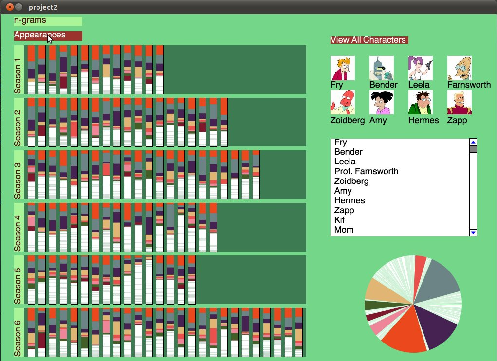
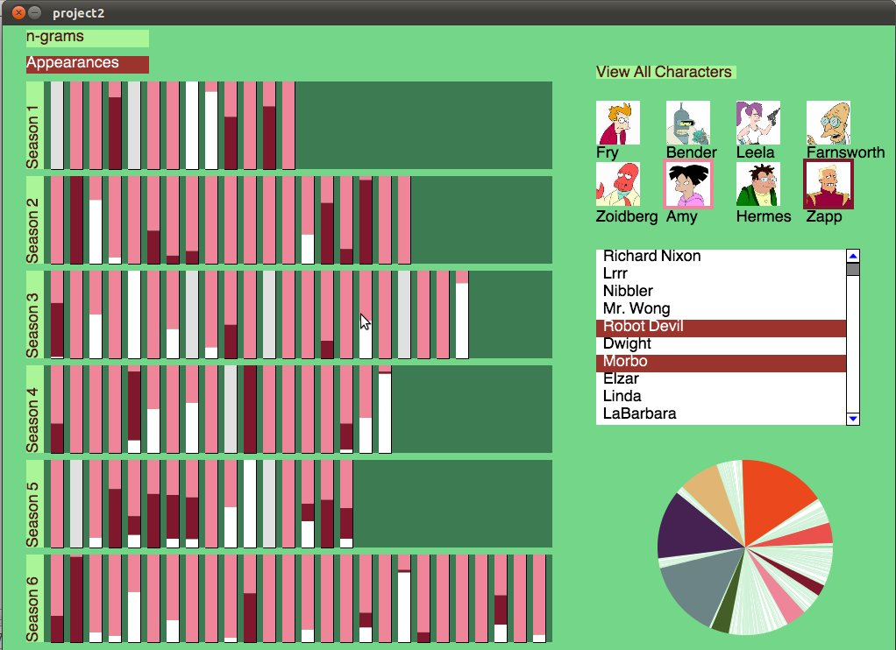
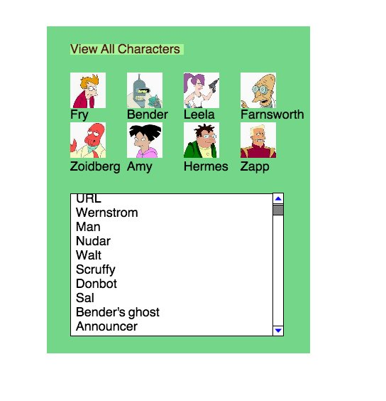
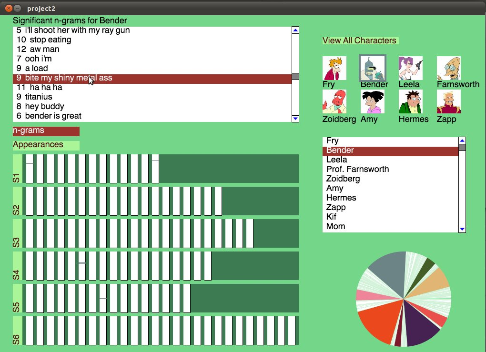
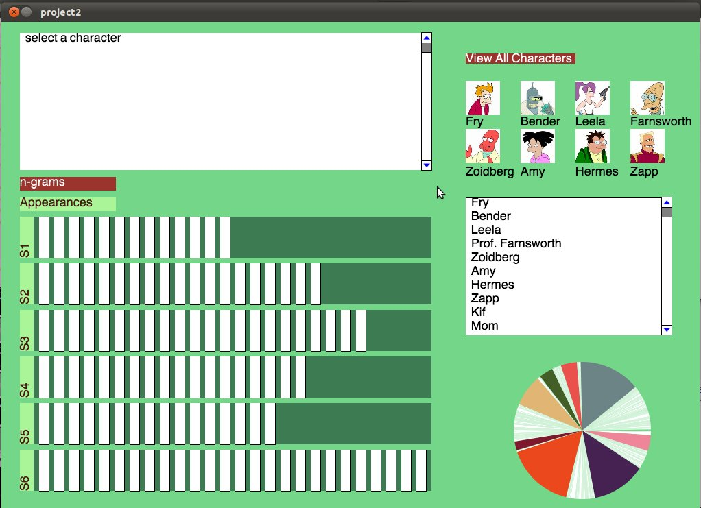
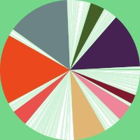

CS 424 Project 2
Vivek Hariharan
Jenny Kinahan
Camillo Lugaresi
Screen Shots
Main Screen displaying all characters transcript data across all seasons and episodes. 
Showing Characters Robot Devil, Amy, Zapp, and Morbo in all seasons 
The control panel which allows for selection of main characters through buttons and other characters through text box. 
Showing the n-grams for Bender and how they span across the seasons 
N-Gram character selection

The pie chart showing the span of transcript data across all episodes